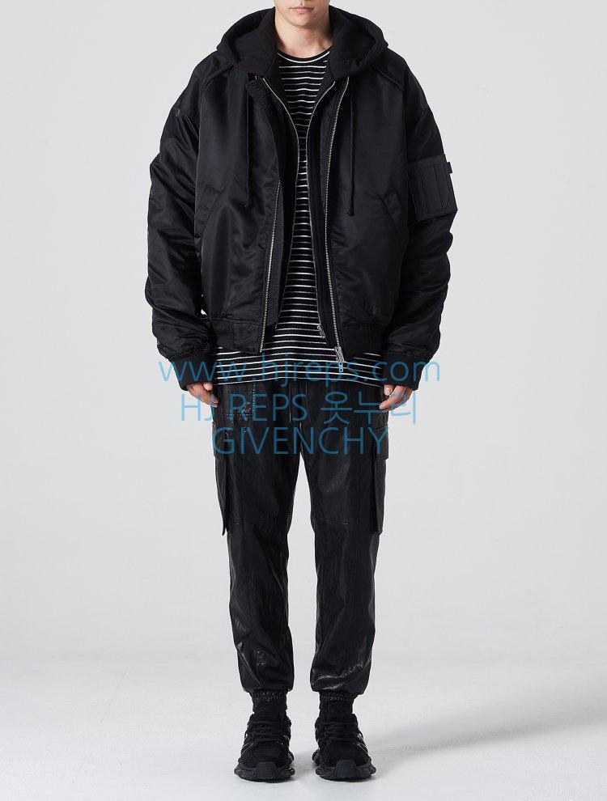

부자제
- 지퍼
- 후드
부자제 분석
부자재
부자재는 크게 두가지로 나뉘어진다
- 지퍼
- 택
지퍼는 ykk를쓴다고한다 아마도 근데 ykk가 뭔지몰라서 내가 검색해봄 ㅋ
현재 지퍼 제조사로는 일본의 YKK(요시다 공업 주식회사)사가 유명하다. 이곳은 유니클로 뿐만 아니라 웬만한 메이커 의류에 납품하며, 전세계 최대 지퍼 제조사다. 위 이미지상에 있는 지퍼도 YKK사의 지퍼. 워낙 업계 탑이다보니 짝퉁도 여럿 돌아다녔고 옛날 YKK 본사측에서 한글로 매일경제신문에 이런 신문광고를 낸걸로 봐서 한국 의류시장에도 YKK 짝퉁들이 다소 유통되었던걸로 추정된다.
YKK를 쌈싸먹는 “명품” 지퍼로 이탈리아의 람포(Lampo)와 스위스의 리리(RiRi)가 유명하지만, 람포와 리리 지퍼는 너무 비싸서 대중적으로 널리 이용되지 못한다. 특히 리리는 수백~수천만원대 가방에나 장착되는 물건.
